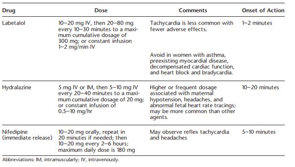

CKD in pregnancy
PENUT
PENUT
trial
Renal outcomes in prem babies <28 weeks
N= 832 | 53% one abnormal renal parameter |18%had an eGFR <90, 36%
had albuminuria, 22% HTN.
Gestational age (odds ratio, 0.94; 95% confidence interval, 0.89 to
0.99), birth weight z-score (odds ratio, 0.92; 95% confidence
interval, 0.85 to 0.98), and prenatal steroids (odds ratio, 1.23; 95%
confidence interval, 1.08 to 1.39) were associated with an eGFR <90
ml/min per 1.73 m2
HTN
- 2-8% of global pregnancy
- Typically uses 140/90 as diagnostic threshold – measured twice 4
hours apart
- pre 20 weeks = chronic
- post 20 weeks = gestational ( with no proteinuria and features of
preeclampsia)
- probably on a spectrum with pre-eclampsia
- 50% of women with gestational hypertension will eventually develop
proteinuria or other end-organ dysfunction consistent with the diagnosis
of preeclampsia, and this progression is more likely when the
hypertension is diagnosed before 32 weeks of gestation
- Elevated CVS risk
- Should be on Aspirin too
Guidelines superceeded by ACOG practice advisory post CHAP -
start Rx at 140/90
Pathophysiology driven by various anti-angiogenic factors released
from the placenta ( soluble FLT-1) - this is normal and required
progression of pregnancy to help spiral arteries egress in preparation
for non catastrophic detachment during delivery but if the pendulum
swings too far can generate HTN/ endothelial damage and long term poorer
CVS/Renal outcomes

CHIPS
CHAP
Treatment
for Mild Chronic Hypertension during Pregnancy
- open-label, multicenter, randomized trial
Included
- mild chronic hypertension and singleton fetuses at a gestational age
of less than 23 weeks
- diabetics with no complications
Excluded
- CKD, Diabetics with no complications
Treatment
- antihypertensive medications recommended for use in pregnancy
Control
- no Rx unless severe hypertension (systolic pressure, ≥160 mm Hg; or
diastolic pressure, ≥105 mm Hg) developed
Primary outcome
- Composite of preeclampsia with severe features, medically indicated
preterm birth at less than 35 weeks’ gestation, placental abruption, or
fetal or neonatal death
Results
- n = 2408 women, >60% black, very high BMI |
primary-outcome Rx vs Ctrl (30.2% vs. 37.0%), for an adjusted RR of 0.82
(95% confidence interval [CI], 0.74 to 0.92; P<0.001).
- NNT 14.7
- Preeclampsia: 24.4% and 31.1%, respectively (risk ratio, 0.79; 95%
CI, 0.69 to 0.89), and the incidence of preterm birth was 27.5% and
31.4% (risk ratio, 0.87; 95% CI, 0.77 to 0.99
- small for gestational age, maternal, neonatal adverse events - no
difference
- sub groups: age, diabetes, BMI, race, gestational vs chronic
htn
- the chronic HTN who were off meds at pregnancy seem to be important
in outcome here but caution as its just a subgroup analysis and no p
vals / CIs are wide and overlapping
Limitations
- only 25% on aspirin at enrollment! should had been 100% given they
are high risk (simply by HTN alone)
- smallish difference in achieved BP - a bit inconsistent with effect
size noted (Mean BP in the active treatment group was 129.5/79.1 mmHg vs
132.6/81.5 mmHg in the standard treatment group, for a difference of 3.1
mmHg in the systolic BP and 2.3 mmHg in the diastolic BP.)
- Gold standard measurement of BP - ?how clinically relevant is
this?
Take home
ACOG recommends utilizing 140/90 as the threshold for initiation
or titration of medical therapy for chronic hypertension in pregnancy,
rather than the previously recommended threshold of 160/110
Preeclampsia
new-onset hypertension, which occurs most often after 20
weeks of gestation and frequently near term
**i.e. if its <20 weeks think about kidney disease rather than pre
eclampsia**
Blood pressure
Sys BP of 140 mm Hg or more or diastolic blood pressure of 90 mm Hg
or more on two occasions at least 4 hours apart after 20 weeks
of gestation in a woman with a previously normal blood
pressure
or
Systolic blood pressure of 160 mm Hg or more or diastolic blood
pressure of 110 mm Hg or more. (Severe hypertension can be confirmed
within (minutes) to facilitate timely antihypertensive therapy, don’t
wait 4 hours).
And
Proteinuria
- 300 mg or more per 24 hour urine collection (or this amount
extrapolated from a timed collection) or
- Protein/creatinine ratio of 0.3 mg/dL or more or
- Dipstick reading of 2+ (used only if other quantitative methods not
available)
- 1+ false positive 71% of times
- 3+ false positive 7%
- Don’t always have to have proteinuria
Or in the absence of proteinuria, new-onset hypertension with the
new onset of any of the following:
- Thrombocytopenia: Platelet count less than 100
- Renal insufficiency: Serum creatinine concentrations greater than 97
or a doubling of the serum creatinine concentration in the absence of
other renal disease ( NB very low baselines climbing within
“normal” range)
- Impaired liver function: Elevated blood concentrations of liver
transaminases to twice normal concentration or unexplained RUQ pain
- Pulmonary oedema
- New-onset headache unresponsive to medication and not accounted for
by alternative diagnoses
- visual symptoms
Severe Preeclmapsia: 160/110 twice & any of the
additional signs/symptoms above.
Notes:
- Headache is unreliable clinically, as is RUQ pain and epigastric
pain
- Alternative diagnoses if presenting earlier than 20 weeks:
- TTP, HUS, molar pregnancy, renal disease or autoimmune disease
- Most pre-eclampsia occurs in women with no risk factors
(genetic/immune compatibility?)
- Other risk factors:
- Nulliparity
- Multifetal gestations
- Preeclampsia in a previous pregnancy
- Chronic hypertension
- Pregestational diabetel, Gestational diabetes
- SLE
- Prepregnancy BMI greater than 30
- Antiphospholipid antibody syndrome
- Maternal age 35 years or older
- CKD
- Assisted reproductive technology
- OOSA
AKI in eclampsia
glomerular endotheliosis consist of swollen, vacuolated endothelial
cells with fibrils, swollen mesangial cells, subendothelial deposits of
protein reabsorbed from the glomerular filtrate, and tubular casts
Oliguria in severe preeclampsia is a consequence of intrarenal
vasospasm with an approximate 25% reduction in glomerular filtration
rate
Transient oligouria is common
HELLP
Typically, third trimester, but 30% of cases can be post partum
Can be atypical - 15% of the patients lack either hypertension or
proteinuria
- LDH elevated >600 IU/L or more
- AST/ALT twice upper limit of normal
- Plts< 100
- RUQ pain in 90% of cases, nausea and vomiting in 50%
##Exclampsia
Convulsive manifestation of severe HTN
New-onset tonic-clonic, focal, or multifocal seizures in the absence
of other causative conditions such as epilepsy, cerebral arterial
ischemia and infarction, intracranial hemorrhage,
78-83% cerebral irritation such as severe and persistent occipital or
frontal headaches, blurred vision, photophobia, and altered mental
status
Not this often doesn’t behave as a linear progression and patients
can present with seizure without prodromal htn/proteinuria (38% in
UK)
1.9-3.2% of preeclampsia progresses in ctrl arms of trials